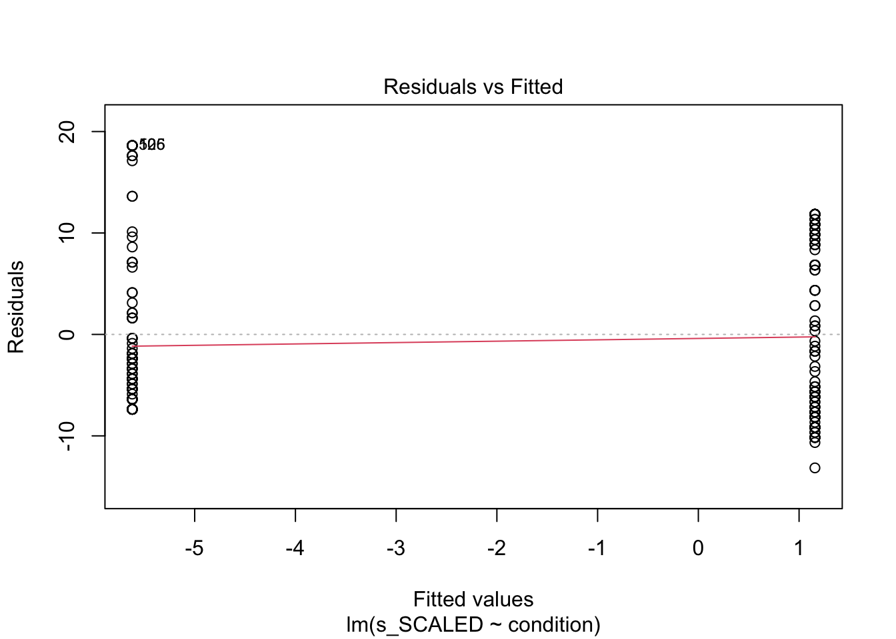

The purpose of this notebook is explore the distribution of dependent variables for Study SGC3A.
Pre-Requisite
Followed By
1_sgc3A_harmonize.qmd
2_sgc3A_rescoring.qmd
CODE
#IMPORT DATA df_items <-read_rds('data/2-scored-data/sgc3a_scored_items.rds')df_subjects <-read_rds('data/2-scored-data/sgc3a_scored_participants.rds')#DROP STIMULUS-ENGINE GENERATED SCORES#these are overriden by scoring file generated scoresdf_subjects <- df_subjects %>%select(-absolute_score)#SEPARATE ITEM DATA BY QUESTION TYPEdf_scaffold <- df_items %>%filter(q <6)df_test <- df_items %>%filter(q >6) %>%filter (q %nin%c(6,9))df_nondiscrim <- df_items %>%filter (q %in%c(6,9))
3.1 Sample
3.1.1 Data Collection
Data was initially collected (in person, SONA groups in computer lab) in Fall 2017. In Spring 2018, additional data were collected after small modifications were made to the experimental platform to increase the size of multiple-choice input buttons, and to add an additional free-response question following the main task block. In Fall 2021, the study was replicated using asynchronous, online SONA pool, with additional participants collected in Winter 2022.
CODE
title ="Participants by Condition and Data Collection Period"cols =c("Control Condition","Impasse Condition","Total for Period")cont <-table(df_subjects$term, df_subjects$condition)cont %>%addmargins() %>%kbl(caption = title, col.names = cols) %>%kable_classic()
Participants by Condition and Data Collection Period
Descriptive Statistics of Participant Age and Gender
min
Q1
median
Q3
max
mean
sd
n
missing
female
lab
18
19
20
21
33
20.4
2.12
126
0
78
online
18
20
20
21
31
20.6
2.00
204
0
137
For in-person collection, 126 participants (60 % female ) undergraduate STEM majors at a public American University participated in person in exchange for course credit (age: 18 - 33 years). Participants were randomly assigned to one of two experimental groups.
For online replication 204 participants (70 % female ) undergraduate STEM majors at a public American University participated online, asynchronously in exchange for course credit (age: 18 - 31 years). Participants were randomly assigned to one of two experimental groups.
CODE
report_participants(df_subjects, education ="schoolyear", sex ="gender", group ="mode")
Cumulative scores indicate the response accuracy by a particular participant across all discriminant items (n=13) in the graph comprehension task.
3.2.1.1 Cumulative Absolute Score
Recall from Section 2.1.2.1 that the absolute score (following the dichotomous scoring approach) s_ABS indicates if the subject’s response for a particular item was perfectly correct: whether they selected all correct answer options and no others (excluding certain allowed exceptions, such as also selecting the data point referenced in the question). The absolute score for an individual item is either 0 or 1. When summarized across the entire set of discriminant items, the cumulative absolute score for an individual subject ranges from [0,13].
Descriptive Statistics of Response Accuracy (Cumulative Item Absolute Score)
min
Q1
median
Q3
max
mean
sd
n
missing
lab
0
0
1
9
13
4.08
5.05
126
0
online
0
0
1
8
13
3.51
4.87
204
0
For in person collection, cumulative absolute scores (n = 126) range from 0 to 13 with a mean score of (M = 4.08, SD = 5.05).
For online replication, (online) cumulative accuracy scores (n = 204) range from 0 to 13 with a slighly lower mean score of (M = 3.51, SD = 4.87).
CODE
#VISUALIZE distribution of response accuracy across SUBJECTS#HISTOGRAMstats = df_subjects %>%group_by(condition, mode) %>% dplyr::summarise(mean =mean(s_ABS))gf_density(~s_ABS, data = df_subjects) %>%gf_facet_grid(condition~mode, labeller = label_both) %>%gf_lims(x =c(0, 13)) %>%gf_vline(data = stats, xintercept =~mean, color ="red") +labs(x ="Cumulative Absolute Score",y ="proportion of subjects",title ="Subject Cumulative Score (Absolute)",subtitle ="Score distributions are comparable across modalities and different across conditions") +theme_minimal()
CODE
#RIDGEPLOT# ggplot(data = df_subjects, aes(x = s_NABS, y = mode)) +# geom_density_ridges() + xlim(0,13)+# facet_wrap(~condition, labeller = label_both) +# labs(x = "Cumulative Absolute Score",# y = "proportion of subjects",# title = "Subject Cumulative Score (Absolute)",# subtitle = "Score distributions are comparable across modalities and different across conditions") + # theme_minimal()
Are the by-condition group means significantly different by data collection modality?
To verify that the data collected in the lab and remotely online are comparable, we perform a t-test on group means of ABSOLUTE SCORE for each condition.
CODE
paste("Two Sample T-Test for S_ABS LAB vs. ONLINE control condition")
[1] "Two Sample T-Test for S_ABS LAB vs. ONLINE control condition"
Welch Two Sample t-test
data: s_ABS by mode
t = -0.5, df = 120, p-value = 0.6
alternative hypothesis: true difference in means is not equal to 0
95 percent confidence interval:
-1.84 1.09
sample estimates:
mean in group asynch mean in group lab-synch
2.30 2.68
CODE
paste("Two Sample T-Test for S_ABS LAB vs. ONLINE impasse condition")
[1] "Two Sample T-Test for S_ABS LAB vs. ONLINE impasse condition"
Welch Two Sample t-test
data: s_ABS by mode
t = -1, df = 135, p-value = 0.3
alternative hypothesis: true difference in means is not equal to 0
95 percent confidence interval:
-2.435 0.727
sample estimates:
mean in group asynch mean in group lab-synch
4.58 5.44
CODE
paste("OLS Linear Regression Predicting Absolute Score by Data Collection Mode")
[1] "OLS Linear Regression Predicting Absolute Score by Data Collection Mode"
CODE
summary(lm(data = df_subjects, formula = s_ABS ~ mode ))
Call:
lm(formula = s_ABS ~ mode, data = df_subjects)
Residuals:
Min 1Q Median 3Q Max
-4.08 -3.51 -2.51 4.49 9.49
Coefficients:
Estimate Std. Error t value Pr(>|t|)
(Intercept) 3.510 0.346 10.14 <2e-16 ***
modelab-synch 0.570 0.560 1.02 0.31
---
Signif. codes: 0 '***' 0.001 '**' 0.01 '*' 0.05 '.' 0.1 ' ' 1
Residual standard error: 4.94 on 328 degrees of freedom
Multiple R-squared: 0.00314, Adjusted R-squared: 0.000105
F-statistic: 1.03 on 1 and 328 DF, p-value: 0.31
Both t-tests are non-significant with 95% confidence intervals including 0. Further, an OLS linear regression model predicting cumulative absolute score indicates that data collection mode is not a significant predictor, explaining only 0.01% of variance in absolute score, F(1,328) = 1.03, p > 0.05.
Note
It is reasonable to infer that data from both in-person and remote studies arise from the same data generating process.
3.2.1.2 Cumulative Scaled Scores
The Cumulative Scaled score s_SCALED summarizes the scaled score on the 13 strategy-discriminant questions, for each subject The range is from -13 (all orthogonal) to 13 (all triangular). Recall that the s_SCALED score for an item is a numeric representation of the strategy-consitent response, scaled from -1 to +1, where “Orthogonal” = -1, “Satisfice” = -1, “Triangular” = 1, “Tversky” = 0.5, “both tri + orth” = 0.5, “reference” = 0, “blank” = 0, “frenzy” = 0, “?” = 0.
Most importantly, the Scaled score gives us a way of quantitatively examining how correctly a participant interpreted the coordinate system across the entire set of items.
Descriptive Statistics of Response Accuracy (Cumulative Scaled Score)
min
Q1
median
Q3
max
mean
sd
n
missing
lab
-13
-11.9
-6
9.75
13
-2.13
10.05
126
0
online
-13
-9.0
-6
8.00
13
-2.03
9.12
204
0
For in person collection, cumulative absolute scores (n = 126) range from -13 to 13 with a mean score of (M = -2.13, SD = 10.05).
For online replication, (online) cumulative accuracy scores (n = 204) range from -13 to 13 with a slighly lower mean score of (M = -2.03, SD = 9.12).
CODE
#VISUALIZE distribution of response accuracy across SUBJECTS#HISTOGRAMstats = df_subjects %>%group_by(condition, mode) %>% dplyr::summarise(mean =mean(s_SCALED))gf_density(~s_SCALED, data = df_subjects, binwidth =1) %>%gf_facet_grid(condition~mode, labeller = label_both) %>%gf_lims(x =c(-13, 13)) %>%gf_vline(data = stats, xintercept =~mean, color ="red") +labs(x ="Cumulative Scaled Score",y ="proportion of subjects",title ="Subject Cumulative Score (Scaled)",subtitle ="Score distributions are comparable across modalities and different across conditions") +theme_minimal()
Are the by-condition group means significantly different by data collection modality?
To verify that the data collected in the lab and remotely online are comparable, we perform a t-test on group means of SCALED SCORE for each condition.
CODE
paste("Two Sample T-Test for s_SCALED LAB vs. ONLINE control condition")
[1] "Two Sample T-Test for s_SCALED LAB vs. ONLINE control condition"
Welch Two Sample t-test
data: s_SCALED by mode
t = 0.3, df = 116, p-value = 0.7
alternative hypothesis: true difference in means is not equal to 0
95 percent confidence interval:
-2.50 3.52
sample estimates:
mean in group asynch mean in group lab-synch
-5.62 -6.13
CODE
paste("Two Sample T-Test for s_SCALED LAB vs. ONLINE impasse condition")
[1] "Two Sample T-Test for s_SCALED LAB vs. ONLINE impasse condition"
Welch Two Sample t-test
data: s_SCALED by mode
t = -0.4, df = 130, p-value = 0.7
alternative hypothesis: true difference in means is not equal to 0
95 percent confidence interval:
-3.29 2.10
sample estimates:
mean in group asynch mean in group lab-synch
1.16 1.75
CODE
paste("OLS Linear Regression Predicting Scaled Score by Data Collection Mode")
[1] "OLS Linear Regression Predicting Scaled Score by Data Collection Mode"
CODE
summary(lm(data = df_subjects, formula = s_SCALED ~ mode ))
Call:
lm(formula = s_SCALED ~ mode, data = df_subjects)
Residuals:
Min 1Q Median 3Q Max
-10.97 -7.97 -3.92 10.03 15.13
Coefficients:
Estimate Std. Error t value Pr(>|t|)
(Intercept) -2.0319 0.6641 -3.06 0.0024 **
modelab-synch -0.0951 1.0747 -0.09 0.9295
---
Signif. codes: 0 '***' 0.001 '**' 0.01 '*' 0.05 '.' 0.1 ' ' 1
Residual standard error: 9.48 on 328 degrees of freedom
Multiple R-squared: 2.39e-05, Adjusted R-squared: -0.00302
F-statistic: 0.00783 on 1 and 328 DF, p-value: 0.93
Both t-tests are non-significant with 95% confidence intervals including 0. Further, an OLS linear regression model predicting cumulative scaled score indicates that data collection mode is not a significant predictor, explaining less than 0.001% of variance in absolute score, F(1,328) = 0.0078, p > 0.05.
Note
It is reasonable to infer that data from both in-person and remote studies arise from the same data generating process.
3.2.2 Item Scores
Item scores indicate the response accuracy by a participant on each individual question discriminant question (n=13) in the graph comprehension task.
3.2.2.1 Item Absolute Score
CODE
x <- df_items %>%mutate(score =as.logical(score_ABS))title ="Proportion of Correct Items By Condition (Lab)"item.contingency <- df_items %>%filter(mode =="lab-synch") %>%select(score_ABS, condition) %>%table() %>%prop.table() %>%addmargins()item.contingency %>%kbl (caption = title) %>%kable_classic()
Proportion of Correct Items By Condition (Lab)
111
121
Sum
0
0.344
0.268
0.613
1
0.148
0.240
0.387
Sum
0.492
0.508
1.000
CODE
title ="Proportion of Correct Items By Condition (Online)"item.contingency <- df_items %>%filter(mode =="asynch") %>%select(score_ABS, condition) %>%table() %>%prop.table() %>%addmargins()item.contingency %>%kbl (caption = title) %>%kable_classic()
Proportion of Correct Items By Condition (Online)
111
121
Sum
0
0.342
0.307
0.649
1
0.128
0.223
0.351
Sum
0.471
0.529
1.000
Across both data collection modalities, the proportion of correct answers is greater in the impasse vs. control condition.
CODE
#VISUALIZE distribution of response accuracy across ITEMS#HISTOGRAMstats = df_items %>%group_by(condition, mode) %>% dplyr::summarise(mean =mean(score_niceABS))gf_props(~score_niceABS, data = df_items) %>%gf_facet_grid(condition~mode, labeller = label_both) +labs(x ="Item Absolute Score",title ="Item Absolute Score",subtitle="Across modalities, the impasse condition yielded more correct responses")+theme_minimal()
3.2.2.2 Item Scaled Score
At the item level, the scaled score gives us a numeric measure of correctness of interpretation, ranging from -1 to 1.
Descriptive Statistics of Item Response Accuracy (Scaled Score)
min
Q1
median
Q3
max
mean
sd
n
missing
lab
-1
-1
0
1
1
-0.084
0.870
1890
0
online
-1
-1
0
1
1
-0.077
0.832
3060
0
CODE
#VISUALIZE distribution of response accuracy across ITEMS#HISTOGRAMstats = df_items %>%group_by(condition, mode) %>% dplyr::summarise(mean =mean(score_SCALED))gf_density(~score_SCALED, data = df_items) %>%gf_facet_grid(condition~mode, labeller = label_both) %>%gf_vline(data = stats, xintercept =~mean, color ="red") +labs(x ="Scaled Score for Item",y ="Proportion of Items",title ="Distribution of Accuracy per Item (Scale Score)",subtitle="The impasse condition shifts density toward the positive score")+theme_minimal()
3.2.2.3 Item Interpretation Scores
CODE
#VISUALIZE distribution of interpretations across all ITEMS#REORDER INTERPRETATION LEVELSdf_items$interpretation <-factor(df_items$interpretation, levels =c("Triangular", "Tversky", "both tri + orth", "blank", "?", "frenzy","reference","Satisfice", "Orthogonal")) title ="Proportion of Interpretations Across Items Items By Condition (Lab)"item.contingency <- df_items %>%filter(mode =="lab-synch") %>%select(interpretation, condition) %>%table() %>%prop.table() %>%addmargins()item.contingency %>%kbl (caption = title) %>%kable_classic()
Proportion of Interpretations Across Items Items By Condition (Lab)
111
121
Sum
Triangular
0.094
0.195
0.288
Tversky
0.004
0.017
0.021
both tri + orth
0.061
0.056
0.116
blank
0.008
0.034
0.042
?
0.025
0.054
0.079
frenzy
0.002
0.005
0.007
reference
0.001
0.004
0.005
Satisfice
0.000
0.028
0.028
Orthogonal
0.297
0.116
0.414
Sum
0.492
0.508
1.000
CODE
title ="Proportion of Interpretations Across Items Items By Condition (Online)"item.contingency <- df_items %>%filter(mode =="asynch") %>%select(interpretation, condition) %>%table() %>%prop.table() %>%addmargins()item.contingency %>%kbl (caption = title) %>%kable_classic()
Proportion of Interpretations Across Items Items By Condition (Online)
111
121
Sum
Triangular
0.078
0.175
0.253
Tversky
0.011
0.023
0.035
both tri + orth
0.056
0.061
0.118
blank
0.013
0.055
0.068
?
0.050
0.066
0.116
frenzy
0.002
0.001
0.003
reference
0.000
0.002
0.002
Satisfice
0.000
0.024
0.024
Orthogonal
0.260
0.122
0.382
Sum
0.471
0.529
1.000
CODE
#PROPORTIONAL BAR CHARTgf_propsh(~interpretation, data = df_items, fill =~mode) %>%gf_facet_grid(mode~condition, labeller = label_both) +labs(x ="Interpretation for Item",title ="Proportion of Interpretations Across Items",subtitle="Impasse Condition yields shift from Orthogonal to alternative interpretations")+theme_minimal()+theme(legend.position ="none")
TODO: Investigate super high and super low response times..
TODO: Investigate appropriate models for response time data. (see: https://lindeloev.github.io/shiny-rt/).
Especially see https://lindeloev.github.io/shiny-rt/ for ideas on modelling reaction time data
3.3.1 Time on Study
CODE
#DESCRIBE distribution of response timetime.stats <-rbind("lab"= df_subjects %>%filter(mode =='lab-synch') %>%select(totaltime_m) %>%unlist() %>%favstats(),"online"= df_subjects %>%filter(mode =='asynch') %>%select(totaltime_m) %>%unlist() %>%favstats())title ="Descriptive Statistics of Response Latency (Time on Study)"time.stats %>%kbl(caption = title) %>%kable_classic()
Descriptive Statistics of Response Latency (Time on Study)
min
Q1
median
Q3
max
mean
sd
n
missing
lab
6.01
10.50
12.2
14.4
23.9
12.8
3.37
126
0
online
2.91
9.18
11.5
15.0
111.0
13.4
9.21
204
0
Total time on study for in person subjects (n = 126) ranged from 6.01 to 23.86 minutes with a mean duration of (M = 12.8, SD = 3.37).
Total time on study for online replication subjects (n = 204) ranged from 2.91 to 111.02 minutes with a mean duration of (M = 13.37, SD = 9.21).
CODE
#VISUALIZE distribution of response timeplab <-gf_dhistogram(~totaltime_m, data = df_subjects) %>%gf_vline(xintercept =~time.stats["lab",]$mean, color ="black") %>%gf_fitdistr(dist="gamma", color="red")+labs(title="Lab", x ="Total Time (mins)", y ="% subjects") +theme_minimal()ponline <-gf_dhistogram(~totaltime_m, data = df_subjects) %>%gf_vline(xintercept =~time.stats["online",]$mean, color ="black") %>%gf_fitdistr(dist ="gamma", color="red")+labs(title="Online", x ="Total Time (mins)", y ="% subjects") +theme_minimal()plot <-ggarrange(plab, ponline, common.legend =TRUE, nrow =1, ncol =2)annotate_figure(plot, top =text_grob("Total Time by Study Mode",color ="black", face ="bold", size =14),bottom =text_grob("fit by Gamma distribution", face ="italic", size =10))
TODO consider log transform of response latency datasee archive sgc3A_participants.Rmd
Registered S3 methods overwritten by 'lme4':
method from
cooks.distance.influence.merMod car
influence.merMod car
dfbeta.influence.merMod car
dfbetas.influence.merMod car
Attaching package: 'lme4'
The following object is masked from 'package:mosaic':
factorize
Attaching package: 'lmerTest'
The following object is masked from 'package:lme4':
lmer
The following object is masked from 'package:mosaic':
rand
The following object is masked from 'package:stats':
step
CODE
library(lme4)m1 <-lm( s_SCALED ~ condition, data = df_subjects %>%filter(mode=='asynch'))m1
Call:
lm(formula = s_SCALED ~ condition, data = df_subjects %>% filter(mode ==
"asynch"))
Residuals:
Min 1Q Median 3Q Max
-13.16 -7.16 -3.02 7.12 18.62
Coefficients:
Estimate Std. Error t value Pr(>|t|)
(Intercept) -5.620 0.866 -6.49 6.5e-10 ***
condition121 6.777 1.190 5.70 4.3e-08 ***
---
Signif. codes: 0 '***' 0.001 '**' 0.01 '*' 0.05 '.' 0.1 ' ' 1
Residual standard error: 8.48 on 202 degrees of freedom
Multiple R-squared: 0.138, Adjusted R-squared: 0.134
F-statistic: 32.4 on 1 and 202 DF, p-value: 4.3e-08
CODE
anova(m1)
Analysis of Variance Table
Response: s_SCALED
Df Sum Sq Mean Sq F value Pr(>F)
condition 1 2334 2334 32.4 4.3e-08 ***
Residuals 202 14536 72
---
Signif. codes: 0 '***' 0.001 '**' 0.01 '*' 0.05 '.' 0.1 ' ' 1
CODE
superanova(m1)
Analysis of Variance Table (Type III SS)
Model: s_SCALED ~ condition
SS df MS F PRE p
----- --------------- | --------- --- -------- ------ ------ -----
Model (error reduced) | 2334.346 1 2334.346 32.439 0.1384 .0000
Error (from model) | 14536.196 202 71.961
----- --------------- | --------- --- -------- ------ ------ -----
Total (empty model) | 16870.543 203 83.106
CODE
plot(m1)

CODE
gf_histogram(~s_SCALED, data = df_subjects)
CODE
gf_histogram(~m1$residuals)
CODE
#Assess assumption of independence of errors#DW statistic should be close to 2library(car)
Loading required package: carData
Attaching package: 'car'
The following objects are masked from 'package:mosaic':
deltaMethod, logit
The following object is masked from 'package:dplyr':
recode
The following object is masked from 'package:purrr':
some
CODE
durbinWatsonTest(m1)
lag Autocorrelation D-W Statistic p-value
1 -0.0134 2.01 0.924
Alternative hypothesis: rho != 0
CODE
#Test for equality of variance#H0 is equality; p > 0.05 infer you can't reject nullleveneTest(m1)
Levene's Test for Homogeneity of Variance (center = median)
Df F value Pr(>F)
group 1 5.4 0.021 *
202
---
Signif. codes: 0 '***' 0.001 '**' 0.01 '*' 0.05 '.' 0.1 ' ' 1
A simple linear regression model predicting cumulative scaled score (at subject level) by condition explains 13% of the total variance, F(1,329) = 47.8, p < 0.001. The model predicts that participants in the impasse condition will score on average 6.38 points higher than those in the control condition, 95% CI [4.56, 8.19].
CODE
t.test(s_SCALED ~ condition, data = df_subjects)
Welch Two Sample t-test
data: s_SCALED by condition
t = -7, df = 322, p-value = 1e-12
alternative hypothesis: true difference in means is not equal to 0
95 percent confidence interval:
-9.10 -5.29
sample estimates:
mean in group 111 mean in group 121
-5.82 1.38
CODE
#%>% report()
CODE
# report_participants(df_subjects)m1 %>%report()
We fitted a linear model (estimated using OLS) to predict s_SCALED with condition (formula: s_SCALED ~ condition). The model explains a statistically significant and moderate proportion of variance (R2 = 0.14, F(1, 202) = 32.44, p < .001, adj. R2 = 0.13). The model's intercept, corresponding to condition = 111, is at -5.62 (95% CI [-7.33, -3.91], t(202) = -6.49, p < .001). Within this model:
- The effect of condition [121] is statistically significant and positive (beta = 6.78, 95% CI [4.43, 9.12], t(202) = 5.70, p < .001; Std. beta = 0.74, 95% CI [0.49, 1.00])
Standardized parameters were obtained by fitting the model on a standardized version of the dataset. 95% Confidence Intervals (CIs) and p-values were computed using the Wald approximation.
CODE
anova(m1) %>%report()
For one-way between subjects designs, partial eta squared is equivalent to eta squared.
Returning eta squared.
The ANOVA suggests that:
- The main effect of condition is statistically significant and medium (F(1, 202) = 32.44, p < .001; Eta2 = 0.14, 95% CI [0.07, 1.00])
CODE
#significant intercept means that group is significantly different than zero
CODE
#logistic regression on on scaled df_subjects because residuals not normal in lm?mlog <-glm(s_SCALED ~ condition , data = df_subjects, family = gaussian)summary(mlog)
Call:
glm(formula = s_SCALED ~ condition, family = gaussian, data = df_subjects)
Deviance Residuals:
Min 1Q Median 3Q Max
-13.38 -7.18 -3.28 8.50 18.82
Coefficients:
Estimate Std. Error t value Pr(>|t|)
(Intercept) -5.820 0.698 -8.34 2.1e-15 ***
condition121 7.198 0.967 7.45 8.6e-13 ***
---
Signif. codes: 0 '***' 0.001 '**' 0.01 '*' 0.05 '.' 0.1 ' ' 1
(Dispersion parameter for gaussian family taken to be 77)
Null deviance: 29508 on 329 degrees of freedom
Residual deviance: 25242 on 328 degrees of freedom
AIC: 2374
Number of Fisher Scoring iterations: 2
CODE
report(mlog)
We fitted a linear model (estimated using ML) to predict s_SCALED with condition (formula: s_SCALED ~ condition). The model's explanatory power is moderate (R2 = 0.14). The model's intercept, corresponding to condition = 111, is at -5.82 (95% CI [-7.19, -4.45], t(328) = -8.34, p < .001). Within this model:
- The effect of condition [121] is statistically significant and positive (beta = 7.20, 95% CI [5.30, 9.09], t(328) = 7.45, p < .001; Std. beta = 0.76, 95% CI [0.56, 0.96])
Standardized parameters were obtained by fitting the model on a standardized version of the dataset. 95% Confidence Intervals (CIs) and p-values were computed using
CODE
#logistic regression on niceABS by condition#pretends that questions are independent and not from same subjects INVALIDmlog <-glm(score_niceABS ~ condition , data = df_items %>%filter(q<6), family =binomial())summary(mlog)
Call:
glm(formula = score_niceABS ~ condition, family = binomial(),
data = df_items %>% filter(q < 6))
Deviance Residuals:
Min 1Q Median 3Q Max
-0.980 -0.980 -0.649 1.389 1.823
Coefficients:
Estimate Std. Error z value Pr(>|z|)
(Intercept) -1.4508 0.0907 -15.99 <2e-16 ***
condition121 0.9672 0.1147 8.43 <2e-16 ***
---
Signif. codes: 0 '***' 0.001 '**' 0.01 '*' 0.05 '.' 0.1 ' ' 1
(Dispersion parameter for binomial family taken to be 1)
Null deviance: 1986.2 on 1649 degrees of freedom
Residual deviance: 1911.3 on 1648 degrees of freedom
AIC: 1915
Number of Fisher Scoring iterations: 4
CODE
report(mlog)
We fitted a logistic model (estimated using ML) to predict score_niceABS with condition (formula: score_niceABS ~ condition). The model's explanatory power is weak (Tjur's R2 = 0.04). The model's intercept, corresponding to condition = 111, is at -1.45 (95% CI [-1.63, -1.28], p < .001). Within this model:
- The effect of condition [121] is statistically significant and positive (beta = 0.97, 95% CI [0.74, 1.19], p < .001; Std. beta = 0.97, 95% CI [0.74, 1.19])
Standardized parameters were obtained by fitting the model on a standardized version of the dataset. 95% Confidence Intervals (CIs) and p-values were computed using
CODE
m2 <-lm( s_NABS ~ condition, data = df_subjects)m2
Call:
lm(formula = s_NABS ~ condition, data = df_subjects)
Residuals:
Min 1Q Median 3Q Max
-4.92 -3.67 -2.47 4.08 10.53
Coefficients:
Estimate Std. Error t value Pr(>|t|)
(Intercept) 2.468 0.384 6.43 4.4e-10 ***
condition121 2.456 0.531 4.62 5.5e-06 ***
---
Signif. codes: 0 '***' 0.001 '**' 0.01 '*' 0.05 '.' 0.1 ' ' 1
Residual standard error: 4.82 on 328 degrees of freedom
Multiple R-squared: 0.0611, Adjusted R-squared: 0.0583
F-statistic: 21.4 on 1 and 328 DF, p-value: 5.49e-06
CODE
anova(m2)
Analysis of Variance Table
Response: s_NABS
Df Sum Sq Mean Sq F value Pr(>F)
condition 1 497 497 21.4 5.5e-06 ***
Residuals 328 7629 23
---
Signif. codes: 0 '***' 0.001 '**' 0.01 '*' 0.05 '.' 0.1 ' ' 1
CODE
supernova(m2)
Analysis of Variance Table (Type III SS)
Model: s_NABS ~ condition
SS df MS F PRE p
----- --------------- | -------- --- ------- ------ ------ -----
Model (error reduced) | 496.765 1 496.765 21.357 0.0611 .0000
Error (from model) | 7629.359 328 23.260
----- --------------- | -------- --- ------- ------ ------ -----
Total (empty model) | 8126.124 329 24.699
A simple linear regression model predicting cumulative absolute score by condition explains 5% of variance, F(1,328) = 16.36, p < 0.001. The model predicts that subjects in the impasse condition will score on average 2 points higher than those in the control condition (Beta = 2.02, 95% CI [1.04, 3.00])
CODE
report(m2)
We fitted a linear model (estimated using OLS) to predict s_NABS with condition (formula: s_NABS ~ condition). The model explains a statistically significant and weak proportion of variance (R2 = 0.06, F(1, 328) = 21.36, p < .001, adj. R2 = 0.06). The model's intercept, corresponding to condition = 111, is at 2.47 (95% CI [1.71, 3.22], t(328) = 6.43, p < .001). Within this model:
- The effect of condition [121] is statistically significant and positive (beta = 2.46, 95% CI [1.41, 3.50], t(328) = 4.62, p < .001; Std. beta = 0.49, 95% CI [0.28, 0.70])
Standardized parameters were obtained by fitting the model on a standardized version of the dataset. 95% Confidence Intervals (CIs) and p-values were computed using the Wald approximation.
CODE
m.m1 <-lmer( score_SCALED ~ (1+ condition|subject), data = df_items)
Warning: Model failed to converge with 1 negative eigenvalue: -8.1e-04
CODE
m.m1
Linear mixed model fit by REML ['lmerModLmerTest']
Formula: score_SCALED ~ (1 + condition | subject)
Data: df_items
REML criterion at convergence: 9773
Random effects:
Groups Name Std.Dev. Corr
subject (Intercept) 0.632
condition121 0.827 -0.71
Residual 0.591
Number of obs: 4950, groups: subject, 330
Fixed Effects:
(Intercept)
-0.0617
CODE
summary(m.m1)
Linear mixed model fit by REML. t-tests use Satterthwaite's method [
lmerModLmerTest]
Formula: score_SCALED ~ (1 + condition | subject)
Data: df_items
REML criterion at convergence: 9773
Scaled residuals:
Min 1Q Median 3Q Max
-2.9664 -0.6738 -0.0461 0.5889 2.7646
Random effects:
Groups Name Variance Std.Dev. Corr
subject (Intercept) 0.400 0.632
condition121 0.685 0.827 -0.71
Residual 0.349 0.591
Number of obs: 4950, groups: subject, 330
Fixed effects:
Estimate Std. Error df t value Pr(>|t|)
(Intercept) -0.0617 0.0344 326.4131 -1.79 0.074 .
---
Signif. codes: 0 '***' 0.001 '**' 0.01 '*' 0.05 '.' 0.1 ' ' 1
CODE
report(m.m1)
We fitted a constant (intercept-only) linear mixed model (estimated using REML and nloptwrap optimizer) to predict score_SCALED (formula: score_SCALED ~ 1). The model included condition and subject as random effects (formula: ~1 + condition | subject). . The model's intercept is at -0.06 (95% CI [-0.13, 5.71e-03], t(4945) = -1.79, p = 0.073). Within this model:
- ()
Standardized parameters were obtained by fitting the model on a standardized version of the dataset. 95% Confidence Intervals (CIs) and p-values were computed using
CODE
m.m2 <-lmer( score_SCALED ~ (1+ condition|q), data = df_items)m.m2
Linear mixed model fit by REML ['lmerModLmerTest']
Formula: score_SCALED ~ (1 + condition | q)
Data: df_items
REML criterion at convergence: 11500
Random effects:
Groups Name Std.Dev. Corr
q (Intercept) 0.602
condition121 0.530 -0.93
Residual 0.765
Number of obs: 4950, groups: q, 15
Fixed Effects:
(Intercept)
0.172
CODE
summary(m.m2)
Linear mixed model fit by REML. t-tests use Satterthwaite's method [
lmerModLmerTest]
Formula: score_SCALED ~ (1 + condition | q)
Data: df_items
REML criterion at convergence: 11500
Scaled residuals:
Min 1Q Median 3Q Max
-1.972 -0.794 -0.093 0.887 2.164
Random effects:
Groups Name Variance Std.Dev. Corr
q (Intercept) 0.363 0.602
condition121 0.281 0.530 -0.93
Residual 0.585 0.765
Number of obs: 4950, groups: q, 15
Fixed effects:
Estimate Std. Error df t value Pr(>|t|)
(Intercept) 0.1717 0.0575 14.0014 2.98 0.0099 **
---
Signif. codes: 0 '***' 0.001 '**' 0.01 '*' 0.05 '.' 0.1 ' ' 1
CODE
report(m.m2)
We fitted a constant (intercept-only) linear mixed model (estimated using REML and nloptwrap optimizer) to predict score_SCALED (formula: score_SCALED ~ 1). The model included condition and q as random effects (formula: ~1 + condition | q). . The model's intercept is at 0.17 (95% CI [0.06, 0.28], t(4945) = 2.98, p = 0.003). Within this model:
- ()
Standardized parameters were obtained by fitting the model on a standardized version of the dataset. 95% Confidence Intervals (CIs) and p-values were computed using
Warning in checkConv(attr(opt, "derivs"), opt$par, ctrl = control$checkConv, :
Model failed to converge with max|grad| = 0.00208782 (tol = 0.002, component 1)
CODE
m.m3 %>%summary()
Linear mixed model fit by REML. t-tests use Satterthwaite's method [
lmerModLmerTest]
Formula: score_SCALED ~ (1 + condition | q) + (1 + condition | subject)
Data: df_items
REML criterion at convergence: 8593
Scaled residuals:
Min 1Q Median 3Q Max
-3.724 -0.644 -0.016 0.697 3.599
Random effects:
Groups Name Variance Std.Dev. Corr
subject (Intercept) 0.339 0.583
condition121 0.218 0.467 -0.46
q (Intercept) 0.268 0.517
condition121 0.197 0.443 -0.91
Residual 0.266 0.516
Number of obs: 4950, groups: subject, 330; q, 15
Fixed effects:
Estimate Std. Error df t value Pr(>|t|)
(Intercept) 0.117 0.071 24.208 1.65 0.11
optimizer (nloptwrap) convergence code: 0 (OK)
Model failed to converge with max|grad| = 0.00208782 (tol = 0.002, component 1)
CODE
m.m3 %>%report()
We fitted a constant (intercept-only) linear mixed model (estimated using REML and nloptwrap optimizer) to predict score_SCALED (formula: score_SCALED ~ 1). The model included condition, q and subject as random effects (formula: list(~1 + condition | q, ~1 + condition | subject)). . The model's intercept is at 0.12 (95% CI [-0.02, 0.26], t(4942) = 1.65, p = 0.098). Within this model:
- ()
Standardized parameters were obtained by fitting the model on a standardized version of the dataset. 95% Confidence Intervals (CIs) and p-values were computed using
---# title: 'Exploration'subtitle: 'Study SGC3A | 3 Exploration'# author: 'Amy Rae Fox'# always_allow_html: true # header-includes:# - \usepackage{amsmath}# output:# html_document:# theme: yeti# code_folding: hide# fig_caption: yes# number_sections: yes# toc: yes# toc_depth: 4# toc_float:# collapsed: no# smooth_scroll: yes# pdf_document: # toc: true# toc_depth: 3# latex_engine: xelatex# font-family: "DejaVu Sans"# mainfont: "DejaVu Sans"---\newpage# Exploration {#sec-SGC3A-exploration}**THIS NOTEBOOK IS INCOMPLETE**TODO- double check which Qs in task are non-discriminating (6 and 9?)```{r}#| label: SETUP#| echo : true#| warning : false#| message : falselibrary(tidyverse) #ALL THE THINGSlibrary(kableExtra) #printing tables library(mosaic) #simple descriptives [favstats]library(Hmisc) # %nin% operatorlibrary(ggpubr) #arrange plotslibrary(report) #easystats reportinglibrary(vcd) #mosaicplots#set some output optionslibrary(dplyr, warn.conflicts =FALSE)options(dplyr.summarise.inform =FALSE)options(ggplot2.summarise.inform =FALSE)options(scipen=1, digits=3)```*The purpose of this notebook is explore the distribution of dependent variables for Study SGC3A.*+------------------------+---------------+| Pre-Requisite | Followed By |+========================+===============+| 1_sgc3A_harmonize.qmd\ | || 2_sgc3A_rescoring.qmd | |+------------------------+---------------+```{r}#| label: IMPORT-DATA#| echo : true#| warning : false#| message : false#IMPORT DATA df_items <-read_rds('data/2-scored-data/sgc3a_scored_items.rds')df_subjects <-read_rds('data/2-scored-data/sgc3a_scored_participants.rds')#DROP STIMULUS-ENGINE GENERATED SCORES#these are overriden by scoring file generated scoresdf_subjects <- df_subjects %>%select(-absolute_score)#SEPARATE ITEM DATA BY QUESTION TYPEdf_scaffold <- df_items %>%filter(q <6)df_test <- df_items %>%filter(q >6) %>%filter (q %nin%c(6,9))df_nondiscrim <- df_items %>%filter (q %in%c(6,9))```## Sample### Data CollectionData was initially collected (in person, SONA groups in computer lab) in Fall 2017. In Spring 2018, additional data were collected after small modifications were made to the experimental platform to increase the size of multiple-choice input buttons, and to add an additional free-response question following the main task block. In Fall 2021, the study was replicated using asynchronous, online SONA pool, with additional participants collected in Winter 2022.```{r}#| label : INSPECT-DATA-COLLECTIONtitle ="Participants by Condition and Data Collection Period"cols =c("Control Condition","Impasse Condition","Total for Period")cont <-table(df_subjects$term, df_subjects$condition)cont %>%addmargins() %>%kbl(caption = title, col.names = cols) %>%kable_classic()```### Participants```{r}#| label: PARTICIPANTS#Describe participantssubject.stats <-rbind("lab"= df_subjects %>%filter(mode =='lab-synch') %>%select(age) %>%unlist() %>%favstats(),"online"= df_subjects %>%filter(mode =="asynch") %>%select(age) %>%unlist() %>%favstats()) subject.stats$female <-c( (df_subjects %>%filter(mode =='lab-synch') %>%filter(gender=="Female") %>%count())$n, (df_subjects %>%filter(mode =="asynch") %>%filter(gender=="Female") %>%count())$n)title ="Descriptive Statistics of Participant Age and Gender"subject.stats %>%kbl (caption = title) %>%kable_classic()```For **in-person** collection, `r subject.stats["lab",]$n` participants (`r round(subject.stats["lab",]$female/subject.stats["lab",]$n,1) * 100` % female ) undergraduate STEM majors at a public American University participated *in person* in exchange for course credit (age: `r (subject.stats['lab','min'])` - `r (subject.stats['lab','max'])` years). Participants were randomly assigned to one of two experimental groups.For **online replication** `r subject.stats["online",]$n` participants (`r round(subject.stats["online",]$female/subject.stats["online",]$n,1) * 100` % female ) undergraduate STEM majors at a public American University participated *online, asynchronously* in exchange for course credit (age: `r (subject.stats['online','min'])` - `r (subject.stats['online','max'])` years). Participants were randomly assigned to one of two experimental groups.```{r}#| label: REPORT-PARTICIPANTSreport_participants(df_subjects, education ="schoolyear", sex ="gender", group ="mode")```## Response Accuracy### Cumulative ScoresCumulative scores indicate the response accuracy by a particular participant across all discriminant items (n=13) in the graph comprehension task.#### Cumulative Absolute ScoreRecall from [Section -@sec-absolute-scoring] that the absolute score (following the dichotomous scoring approach) `s_ABS` indicates if the subject's response for a particular item was *perfectly* correct: whether they selected all correct answer options and no others (excluding certain allowed exceptions, such as also selecting the data point referenced in the question). The absolute score for an individual item is either 0 or 1. When summarized across the entire set of discriminant items, the cumulative absolute score for an individual subject ranges from \[0,13\].```{r}#| label: ABS-SUBJECTtitle ="Descriptive Statistics of Response Accuracy (Cumulative Item Absolute Score)"abs.stats <-rbind("lab"= df_subjects %>%filter(mode =='lab-synch') %>%select(s_ABS) %>%unlist() %>%favstats(),"online"= df_subjects %>%filter(mode =="asynch") %>%select(s_ABS) %>%unlist() %>%favstats()) abs.stats %>%kbl (caption = title) %>%kable_classic()```For *in person* collection, cumulative absolute scores (n = `r abs.stats["lab",]$n`) range from `r round(abs.stats["lab",]$min,2)` to `r round(abs.stats["lab",]$max,2)` with a mean score of (M = `r round(abs.stats["lab",]$mean,2)`, SD = `r round(abs.stats["lab",]$sd,2)`).For *online replication*, (online) cumulative accuracy scores (n = `r abs.stats["online",]$n`) range from `r round(abs.stats["online",]$min,2)` to `r round(abs.stats["online",]$max,2)` with a slighly lower mean score of (M = `r round(abs.stats["online",]$mean,2)`, SD = `r round(abs.stats["online",]$sd,2)`).```{r}#| label: VIS-SUBJECT-ABS#VISUALIZE distribution of response accuracy across SUBJECTS#HISTOGRAMstats = df_subjects %>%group_by(condition, mode) %>% dplyr::summarise(mean =mean(s_ABS))gf_density(~s_ABS, data = df_subjects) %>%gf_facet_grid(condition~mode, labeller = label_both) %>%gf_lims(x =c(0, 13)) %>%gf_vline(data = stats, xintercept =~mean, color ="red") +labs(x ="Cumulative Absolute Score",y ="proportion of subjects",title ="Subject Cumulative Score (Absolute)",subtitle ="Score distributions are comparable across modalities and different across conditions") +theme_minimal()#RIDGEPLOT# ggplot(data = df_subjects, aes(x = s_NABS, y = mode)) +# geom_density_ridges() + xlim(0,13)+# facet_wrap(~condition, labeller = label_both) +# labs(x = "Cumulative Absolute Score",# y = "proportion of subjects",# title = "Subject Cumulative Score (Absolute)",# subtitle = "Score distributions are comparable across modalities and different across conditions") + # theme_minimal()```**Are the by-condition group means significantly different by data collection modality?**To verify that the data collected in the lab and remotely online are comparable, we perform a t-test on group means of ABSOLUTE SCORE for each condition.```{r}#| label : MODEL-ABSCORE-BY-MODALITYpaste("Two Sample T-Test for S_ABS LAB vs. ONLINE control condition")t.test(data = df_subjects %>%filter(condition ==111), s_ABS ~ mode )paste("Two Sample T-Test for S_ABS LAB vs. ONLINE impasse condition")t.test(data = df_subjects %>%filter(condition ==121), s_ABS ~ mode )paste("OLS Linear Regression Predicting Absolute Score by Data Collection Mode")summary(lm(data = df_subjects, formula = s_ABS ~ mode ))```Both t-tests are non-significant with 95% confidence intervals including 0. Further, an OLS linear regression model predicting cumulative absolute score indicates that data collection mode is not a significant predictor, explaining only 0.01% of variance in absolute score, F(1,328) = 1.03, p \> 0.05.::: callout-note**It is reasonable to infer that data from both in-person and remote studies arise from the same data generating process.**:::#### Cumulative Scaled ScoresThe Cumulative Scaled score `s_SCALED` summarizes the scaled score on the 13 strategy-discriminant questions, for each subject The range is from -13 (all orthogonal) to 13 (all triangular). Recall that the s_SCALED score for an item is a numeric representation of the strategy-consitent response, scaled from -1 to +1, where "Orthogonal" = -1, "Satisfice" = -1, "Triangular" = 1, "Tversky" = 0.5, "both tri + orth" = 0.5, "reference" = 0, "blank" = 0, "frenzy" = 0, "?" = 0.Most importantly, the Scaled score gives us a way of quantitatively examining how correctly a participant interpreted the coordinate system across the entire set of items. ```{r}#| label: SCALED-SUBJECTtitle ="Descriptive Statistics of Response Accuracy (Cumulative Scaled Score)"scaled.stats <-rbind("lab"= df_subjects %>%filter(mode =='lab-synch') %>%select(s_SCALED) %>%unlist() %>%favstats(),"online"= df_subjects %>%filter(mode =="asynch") %>%select(s_SCALED) %>%unlist() %>%favstats()) scaled.stats %>%kbl (caption = title) %>%kable_classic()```For in person collection, cumulative absolute scores (n = `r scaled.stats["lab",]$n`) range from `r round(scaled.stats["lab",]$min,2)` to `r round(abs.stats["lab",]$max,2)` with a mean score of (M = `r round(scaled.stats["lab",]$mean,2)`, SD = `r round(scaled.stats["lab",]$sd,2)`).For online replication, (online) cumulative accuracy scores (n = `r scaled.stats["online",]$n`) range from `r round(scaled.stats["online",]$min,2)` to `r round(scaled.stats["online",]$max,2)` with a slighly lower mean score of (M = `r round(scaled.stats["online",]$mean,2)`, SD = `r round(scaled.stats["online",]$sd,2)`).```{r}#| label: VIS-SUBJECT-SCALED-SCORE#VISUALIZE distribution of response accuracy across SUBJECTS#HISTOGRAMstats = df_subjects %>%group_by(condition, mode) %>% dplyr::summarise(mean =mean(s_SCALED))gf_density(~s_SCALED, data = df_subjects, binwidth =1) %>%gf_facet_grid(condition~mode, labeller = label_both) %>%gf_lims(x =c(-13, 13)) %>%gf_vline(data = stats, xintercept =~mean, color ="red") +labs(x ="Cumulative Scaled Score",y ="proportion of subjects",title ="Subject Cumulative Score (Scaled)",subtitle ="Score distributions are comparable across modalities and different across conditions") +theme_minimal()```**Are the by-condition group means significantly different by data collection modality?**To verify that the data collected in the lab and remotely online are comparable, we perform a t-test on group means of SCALED SCORE for each condition.```{r}#| label : MODEL-SCALEDSCORE-BY-MODALITYpaste("Two Sample T-Test for s_SCALED LAB vs. ONLINE control condition")t.test(data = df_subjects %>%filter(condition ==111), s_SCALED ~ mode )paste("Two Sample T-Test for s_SCALED LAB vs. ONLINE impasse condition")t.test(data = df_subjects %>%filter(condition ==121), s_SCALED ~ mode )paste("OLS Linear Regression Predicting Scaled Score by Data Collection Mode")summary(lm(data = df_subjects, formula = s_SCALED ~ mode ))```Both t-tests are non-significant with 95% confidence intervals including 0. Further, an OLS linear regression model predicting cumulative scaled score indicates that data collection mode is not a significant predictor, explaining less than 0.001% of variance in absolute score, F(1,328) = 0.0078, p \> 0.05.::: callout-note**It is reasonable to infer that data from both in-person and remote studies arise from the same data generating process.**:::### Item ScoresItem scores indicate the response accuracy by a participant on each individual question discriminant question (n=13) in the graph comprehension task.#### Item Absolute Score```{r}#| label: ABS-ITEMx <- df_items %>%mutate(score =as.logical(score_ABS))title ="Proportion of Correct Items By Condition (Lab)"item.contingency <- df_items %>%filter(mode =="lab-synch") %>%select(score_ABS, condition) %>%table() %>%prop.table() %>%addmargins()item.contingency %>%kbl (caption = title) %>%kable_classic()title ="Proportion of Correct Items By Condition (Online)"item.contingency <- df_items %>%filter(mode =="asynch") %>%select(score_ABS, condition) %>%table() %>%prop.table() %>%addmargins()item.contingency %>%kbl (caption = title) %>%kable_classic()```Across both data collection modalities, the proportion of correct answers is greater in the impasse vs. control condition. ```{r}#| label: VIS-ITEMS-ABS-SCORE#VISUALIZE distribution of response accuracy across ITEMS#HISTOGRAMstats = df_items %>%group_by(condition, mode) %>% dplyr::summarise(mean =mean(score_niceABS))gf_props(~score_niceABS, data = df_items) %>%gf_facet_grid(condition~mode, labeller = label_both) +labs(x ="Item Absolute Score",title ="Item Absolute Score",subtitle="Across modalities, the impasse condition yielded more correct responses")+theme_minimal()```#### Item Scaled ScoreAt the item level, the scaled score gives us a numeric measure of correctness of interpretation, ranging from -1 to 1. ```{r}#| label: Scaled-ITEMtitle ="Descriptive Statistics of Item Response Accuracy (Scaled Score)"scaled.stats.items <-rbind("lab"= df_items %>%filter(mode =='lab-synch') %>%select(score_SCALED) %>%unlist() %>%favstats(),"online"= df_items %>%filter(mode =="asynch") %>%select(score_SCALED) %>%unlist() %>%favstats()) scaled.stats.items %>%kbl (caption = title) %>%kable_classic()``````{r}#| label: VIS-ITEMS-SCALED-SCORE#VISUALIZE distribution of response accuracy across ITEMS#HISTOGRAMstats = df_items %>%group_by(condition, mode) %>% dplyr::summarise(mean =mean(score_SCALED))gf_density(~score_SCALED, data = df_items) %>%gf_facet_grid(condition~mode, labeller = label_both) %>%gf_vline(data = stats, xintercept =~mean, color ="red") +labs(x ="Scaled Score for Item",y ="Proportion of Items",title ="Distribution of Accuracy per Item (Scale Score)",subtitle="The impasse condition shifts density toward the positive score")+theme_minimal()```#### Item Interpretation Scores```{r}#| label: FREQ-ITEMS-INTERPRETATIONS#VISUALIZE distribution of interpretations across all ITEMS#REORDER INTERPRETATION LEVELSdf_items$interpretation <-factor(df_items$interpretation, levels =c("Triangular", "Tversky", "both tri + orth", "blank", "?", "frenzy","reference","Satisfice", "Orthogonal")) title ="Proportion of Interpretations Across Items Items By Condition (Lab)"item.contingency <- df_items %>%filter(mode =="lab-synch") %>%select(interpretation, condition) %>%table() %>%prop.table() %>%addmargins()item.contingency %>%kbl (caption = title) %>%kable_classic()title ="Proportion of Interpretations Across Items Items By Condition (Online)"item.contingency <- df_items %>%filter(mode =="asynch") %>%select(interpretation, condition) %>%table() %>%prop.table() %>%addmargins()item.contingency %>%kbl (caption = title) %>%kable_classic()``````{r}#| label: VIS-ITEMS-INTERPRETATIONS#PROPORTIONAL BAR CHARTgf_propsh(~interpretation, data = df_items, fill =~mode) %>%gf_facet_grid(mode~condition, labeller = label_both) +labs(x ="Interpretation for Item",title ="Proportion of Interpretations Across Items",subtitle="Impasse Condition yields shift from Orthogonal to alternative interpretations")+theme_minimal()+theme(legend.position ="none")#MOSAIC PLOTvcd::mosaic(main="Proportion of Item Interpretation across Conditions",data = df_items, condition ~ interpretation, rot_labels=c(0,90,0,0), offset_varnames =c(left =4.5), offset_labels =c(left =-0.5),just_labels ="right",spacing =spacing_dimequal(unit(1:2, "lines"))) ```## Response Latency- [TODO: Investigate super high and super low response times.]{style="color: red;"}.- [TODO: Investigate appropriate models for response time data. (see: https://lindeloev.github.io/shiny-rt/)]{style="color: red;"}.- Especially see https://lindeloev.github.io/shiny-rt/ for ideas on modelling reaction time data### Time on Study```{r DESCRIBE-TOTALTIME}#DESCRIBE distribution of response timetime.stats <-rbind("lab"= df_subjects %>%filter(mode =='lab-synch') %>%select(totaltime_m) %>%unlist() %>%favstats(),"online"= df_subjects %>%filter(mode =='asynch') %>%select(totaltime_m) %>%unlist() %>%favstats())title ="Descriptive Statistics of Response Latency (Time on Study)"time.stats %>%kbl(caption = title) %>%kable_classic()```Total time on study for *in person* subjects (n = `r time.stats["lab",]$n`) ranged from `r round(time.stats["lab",]$min,2)` to `r round(time.stats["lab",]$max,2)` minutes with a mean duration of (M = `r round(time.stats["lab",]$mean,2)`, SD = `r round(time.stats["lab",]$sd,2)`).Total time on study for *online replication* subjects (n = `r time.stats["online",]$n`) ranged from `r round(time.stats["online",]$min,2)` to `r round(time.stats["online",]$max,2)` minutes with a mean duration of (M = `r round(time.stats["online",]$mean,2)`, SD = `r round(time.stats["online",]$sd,2)`).```{r}#| label : VIS-TOTALTIME#| message : false#| warning : false#VISUALIZE distribution of response timeplab <-gf_dhistogram(~totaltime_m, data = df_subjects) %>%gf_vline(xintercept =~time.stats["lab",]$mean, color ="black") %>%gf_fitdistr(dist="gamma", color="red")+labs(title="Lab", x ="Total Time (mins)", y ="% subjects") +theme_minimal()ponline <-gf_dhistogram(~totaltime_m, data = df_subjects) %>%gf_vline(xintercept =~time.stats["online",]$mean, color ="black") %>%gf_fitdistr(dist ="gamma", color="red")+labs(title="Online", x ="Total Time (mins)", y ="% subjects") +theme_minimal()plot <-ggarrange(plab, ponline, common.legend =TRUE, nrow =1, ncol =2)annotate_figure(plot, top =text_grob("Total Time by Study Mode",color ="black", face ="bold", size =14),bottom =text_grob("fit by Gamma distribution", face ="italic", size =10))```**TODO consider log transform of response latency data** *see* archive sgc3A_participants.Rmd### Time on Question**TODO time on question**## Model Peeking```{r}library(supernova)library(report)library(lmerTest)library(lme4)m1 <-lm( s_SCALED ~ condition, data = df_subjects %>%filter(mode=='asynch'))m1summary(m1)anova(m1)superanova(m1)plot(m1)gf_histogram(~s_SCALED, data = df_subjects)gf_histogram(~m1$residuals)#Assess assumption of independence of errors#DW statistic should be close to 2library(car)durbinWatsonTest(m1)#Test for equality of variance#H0 is equality; p > 0.05 infer you can't reject nullleveneTest(m1)```A simple linear regression model predicting cumulative scaled score (at subject level) by condition explains 13% of the total variance, F(1,329) = 47.8, p \< 0.001. The model predicts that participants in the impasse condition will score on average 6.38 points higher than those in the control condition, 95% CI \[4.56, 8.19\].```{r}t.test(s_SCALED ~ condition, data = df_subjects)#%>% report()``````{r}# report_participants(df_subjects)m1 %>%report()anova(m1) %>%report()#significant intercept means that group is significantly different than zero``````{r}#logistic regression on on scaled df_subjects because residuals not normal in lm?mlog <-glm(s_SCALED ~ condition , data = df_subjects, family = gaussian)summary(mlog)report(mlog)``````{r}#logistic regression on niceABS by condition#pretends that questions are independent and not from same subjects INVALIDmlog <-glm(score_niceABS ~ condition , data = df_items %>%filter(q<6), family =binomial())summary(mlog)report(mlog)``````{r}m2 <-lm( s_NABS ~ condition, data = df_subjects)m2summary(m2)anova(m2)supernova(m2)```A simple linear regression model predicting cumulative absolute score by condition explains 5% of variance, F(1,328) = 16.36, p \< 0.001. The model predicts that subjects in the impasse condition will score on average 2 points higher than those in the control condition (Beta = 2.02, 95% CI \[1.04, 3.00\])```{r}report(m2)``````{r}m.m1 <-lmer( score_SCALED ~ (1+ condition|subject), data = df_items)m.m1summary(m.m1)report(m.m1)``````{r}m.m2 <-lmer( score_SCALED ~ (1+ condition|q), data = df_items)m.m2summary(m.m2)report(m.m2)``````{r}m.m3 <-lmer( score_SCALED ~ (1+ condition|q) + (1+condition|subject), data = df_items)m.m3 %>%summary() m.m3 %>%report()``````{r}anova(m.m1, m.m2, m.m3)```## Resources- https://rpkgs.datanovia.com/ggpubr/reference/index.html